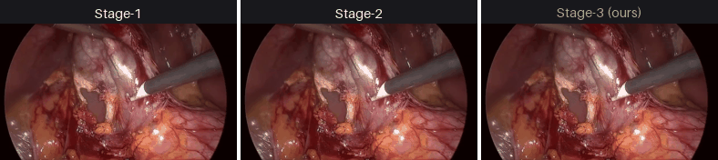
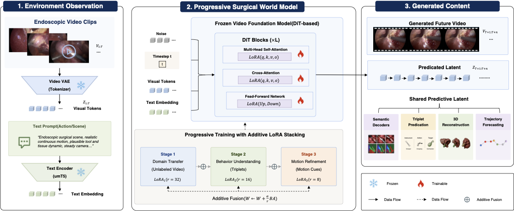
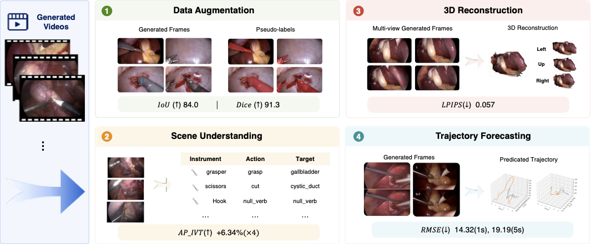
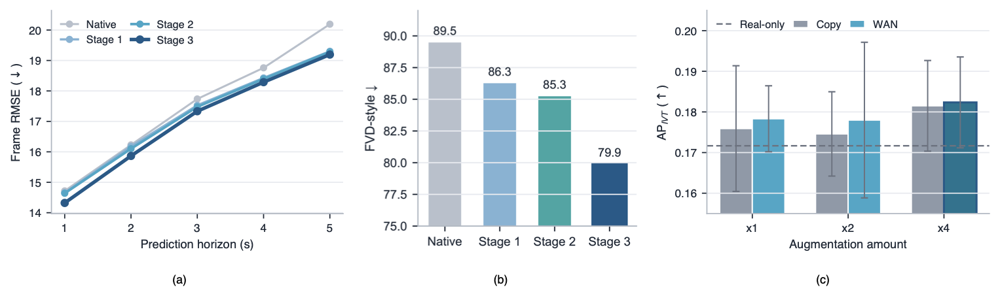

Surgical video world modeling
SurgGenesis:A Generative Surgical World Model for Future-Aware Surgical Understanding
Abstract
Surgical scene understanding is severely bottlenecked by data scarcity and long-tail class imbalance, as annotating surgical videos demands scarce clinical expertise while rare procedural events remain underrepresented. We tackle this through data generation and propose SurgGenesis, a generative surgical world model that learns future surgical state transitions in a latent space from visual observations and textual procedural descriptions, serving as a scalable surgical data engine. To adapt a large-scale video diffusion model to the data-scarce surgical domain without catastrophic forgetting, we introduce a three-stage progressive LoRA strategy that incrementally injects endoscopic visual priors, procedural semantics, and spatial motion cues. Rather than judging generation by visual fidelity alone, we validate SurgGenesis along two axes that separate a world model from a generic generator: (i) future-awareness, by comparing predicted futures against the real future through a GT-latent prediction gap and temporal-horizon analysis, and (ii) action-faithful usefulness, by checking that generated clips contain the commanded surgical triplet and that using them to rebalance long-tail events and drive downstream understanding (segmentation, triplet recognition, 3D reconstruction) yields action-specific gains. Because SurgGenesis renders a commanded action as a temporally coherent future from real context, its synthetic data carries action-specific variation a generic generator cannot provide.
Surgical future prediction

Overall framework
Endoscopic observations and text conditioning enter a frozen video foundation model. Each adaptation stage permanently fuses its learned update before the next stage begins.

Future video prediction
The same observed surgical context is propagated by three stages of the progressive curriculum.
Generated content, downstream use.

Stage ablation
